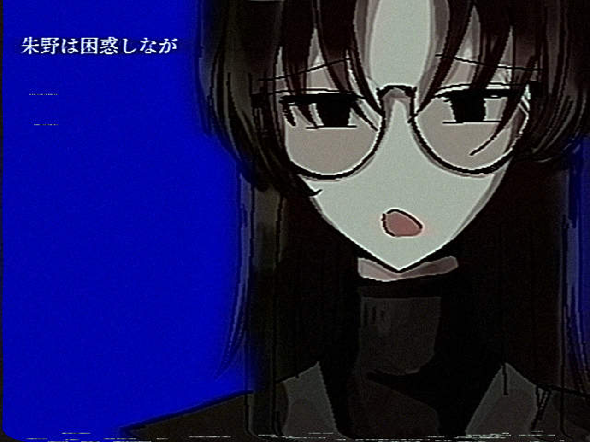
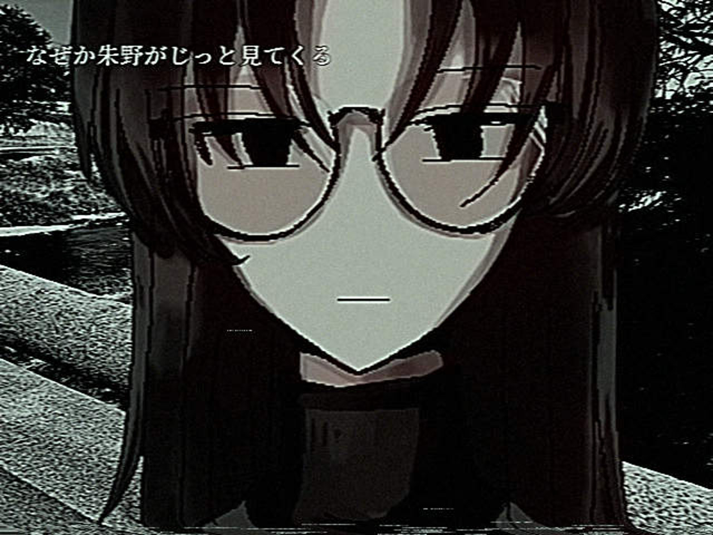
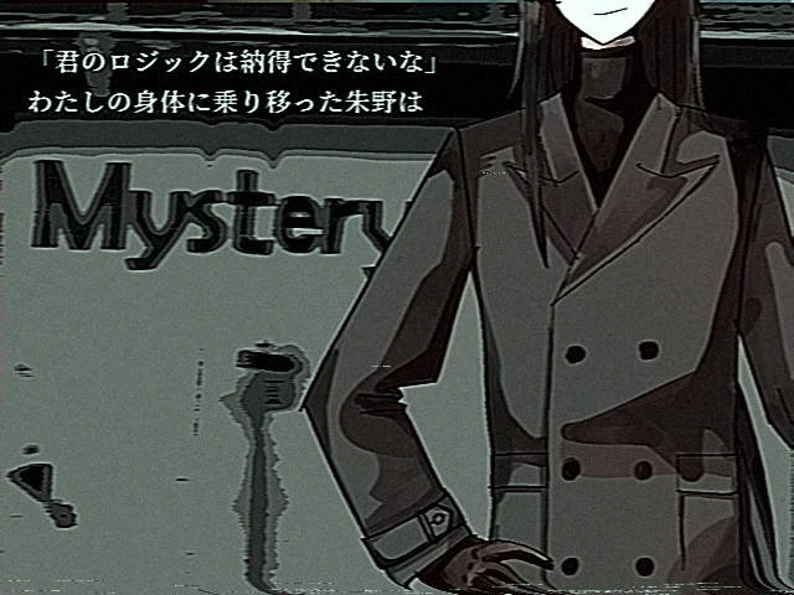
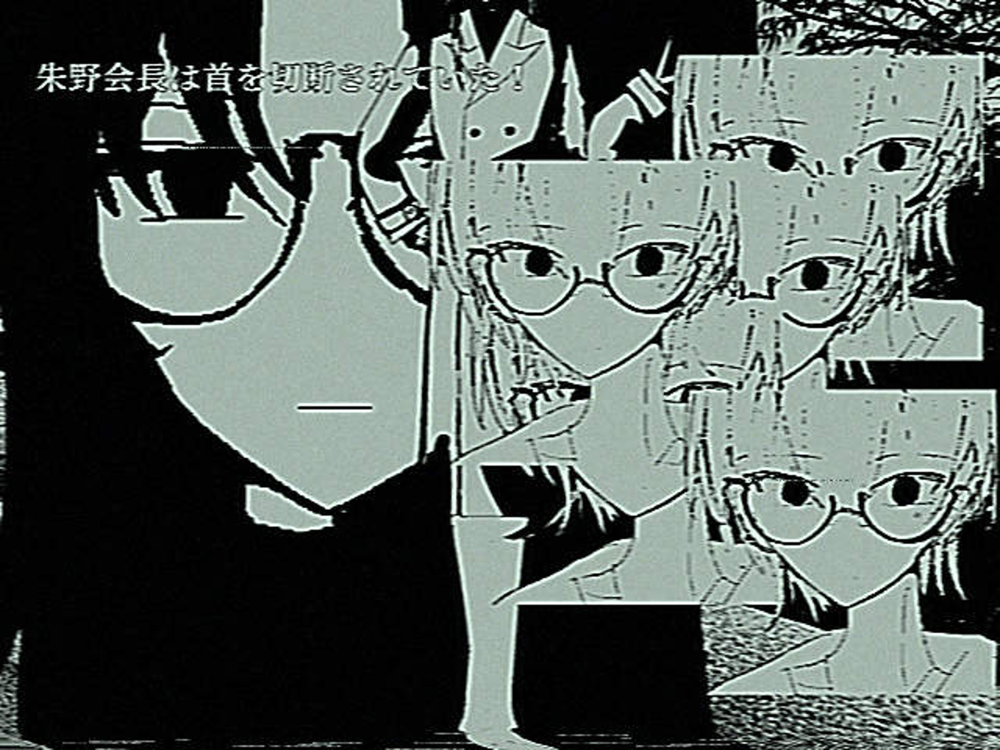

| 種別 | UTAU音声ライブラリ |
|---|---|
| 誕生日 | 01月07日 |
| 身長 | おおよそ200mほど |
| 体重 | 不明 |
| 声 | 本（殊能将之『ハサミ男』（講談社文庫））＋ハサミ |
| プレイ時間 | （目安）120分〜 |
■キャラクター
「君と話がしたいんだ」
あなたの背後霊です。ハサミと本を使って、あなたとコミュニケーションをとろうとしています。
なんと首が取れます。
■音源について
本とハサミを元にした無生物音源です。
・通常音源（単独音）
※UST 有魚神弥/番煎P